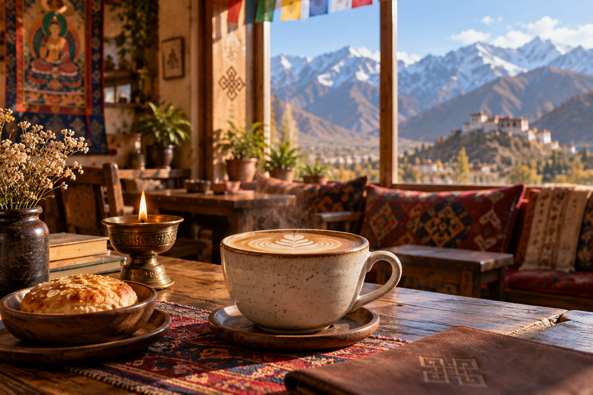

Help us grow
Tell us how it felt.
Your feedback helps us make the coffee, food and experience at Wangmo's even better.
A few words
How was your visit?
Whether you loved the coffee, discovered a new Ladakhi dish, enjoyed the view or think something could be improved, we want to hear it.
“Same mountains. Bigger conversations.”
